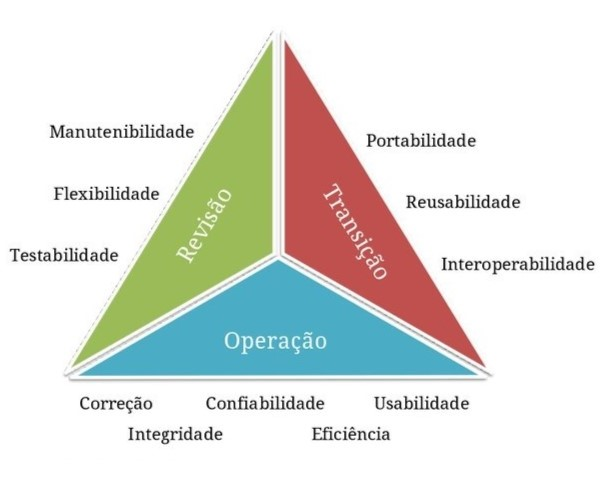
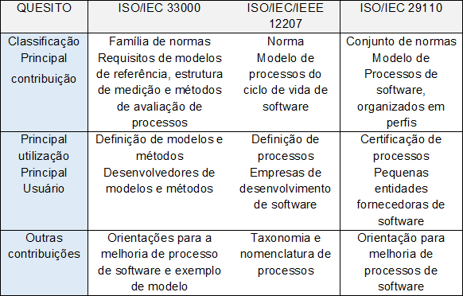

Qualidade de Software


A qualidade de software é uma área do conhecimento da engenharia e seu objetivo é garantir a qualidade do software através da definição e normatização de processos de desenvolvimento (KONIA, 2019).
Essa é a área responsável por garantir a implementação do código de acordo com as boas práticas e normas da área, e assim garantir a qualidade e o cumprimento dos requisitos do projeto (TRUECHANGE, 2022).
O desenvolvimento da qualidade de software é a área responsável por avaliar e garantir o desenvolvimento de um software de acordo com as boas práticas técnicas da literatura, cumprindo os requisitos do sistema de acordo com o objetivo final do projeto (TRUECHANGE, 2022).

Dada a relevância do software não só no mundo dos negócios, como também na vida das pessoas, “desenvolver, adquirir, utilizar, manter e evoluir software e seus sistemas e serviços relacionados é cada vez mais importante” (SALVIANO, 2020, p. 8).
Para Sommerville (2018), na sociedade moderna seria um desafio viver sem tecnologia, ela está em todos os lugares, no desenvolvimento e fabricação de produtos, na comunicação, na saúde, no sistema financeiro, no transporte e onde mais a imaginação levar, portanto, a dependência por softwares mais complexos e confiáveis é cada vez maior.
O desenvolvimento de produtos de software, para Sommerville (2018), continua sendo um grande desafio e a engenharia de software vem se desenvolvendo nos últimos anos para se adequar às exigências do mercado. Empresas grandes e estruturadas possuem equipes, metodologia, ferramentas e tecnologia que contribuem para a qualidade e confiabilidade do produto desenvolvido. Independente do porte e dos recursos de que dispõem para desenvolver o software, garantir a sua qualidade, ou seja, que ele atenda aos requisitos do cliente no prazo e custo pré-estabelecidos é o mínimo necessário para que se sobreviva no mercado.
Sommerville, descrevendo a atividade de desenvolvimento de software profissional, menciona que,
os processos de software são complexos e, como processos intelectuais e criativos, dependem da tomada de decisão e do julgamento das pessoas. Uma vez que não existe um processo universal que valha para todos os tipos de software, a maioria das empresas produtoras de software concebeu seus próprios processos de desenvolvimento... Nos casos dos sistemas críticos em segurança, é necessário um processo de desenvolvimento muito estruturado e que registros detalhados sejam mantidos (SOMMERVILLE, 2018, p. 30).
Nesse contexto, para Sommerville (2018), entender o significado de qualidade de software é o primeiro grande desafio para a definição e implantação de um programa de qualidade, assim como conscientizar os desenvolvedores de softwares, sejam autônomos, pequenas, médias ou grandes empresas de que é necessário seguir normas ou padrões.
Salviano (2020) apresenta a qualidade de software sob três aspectos: melhoria de processo, gerenciamento da qualidade e teste de software.
A figura a seguir mostra um resumo com as principais características das normas ISO/IEC 33000, ISO/IEC/IEEE 12207 e normas ISO/IEC 29110 com suas contribuições e principais usuários.

O desenvolvimento de software consiste em um processo complexo, com inúmeras abordagens, que sugerem propostas de gerenciamento em fases bem definidas, visando a uma produção que garanta aos produtos a qualidade desejada por seus clientes. Com base nas várias opções de tecnologia existentes e na crescente demanda em diferentes áreas das sociedades, é essencial que as empresas adotem modelos que permitam avaliar o processo de desenvolvimento e a produção de software (FENNER, 2021).
Salviano (2020, p. 26) diz que “uma das definições para qualidade de software está relacionada com a conformidade do software com seus requisitos”, e entende-se por requisitos aquilo que é esperado do software, as ações que deve executar e os resultados que deve apresentar.
Segundo ProMove (2018), um modelo contendo um conjunto de práticas que servem de referência para que empresas possam melhorar os processos e desempenho no desenvolvimento de produtos e serviços, bem como na prestação de serviços e gerenciamento de fornecedores é o CMMI, que significa Capability Maturity Model Integration (Integração do Modelo de Maturidade de Capacidade).
A finalidade do Modelo CMMI (Integração do Modelo de Maturidade de Capacidade), para a Microsoft (2023), é avaliar a maturidade dos processos de uma organização e oferecer um direcionamento claro e diretrizes sobre como otimizar os processos, com uma meta de produtos aprimorados. Além disso, o CMMI é um modelo de gerenciamento de riscos e fornece uma forma de mensurar a capacidade do gerenciamento de risco de uma organização.
Segundo a ProMove (2021), existem três visões diferentes do modelo CMMI, que são:
Estas três visões do modelo CMMI podem ser utilizadas respectivamente por empresas que desenvolvem produtos de hardware ou software, empresas que prestam serviços de TICs e até outros tipos de serviços como: serviços médicos e educacionais e empresas que gerenciam fornecedores de produtos ou serviços, por exemplo, órgãos públicos que terceirizam a prestação de serviços e o desenvolvimento de sistemas (PROMOVE, 2018).
O Programa MPS.BR (Melhoria de Processo do Software Brasileiro) é um programa da Softex (Organização Social Civil de Interesse Público) que atua nas áreas de tecnologia e informação com o apoio do Ministério da Ciência e Tecnologia e Inovações (MCTI) com o objetivo de melhorar a capacidade de desenvolvimento de software, serviços e práticas de gestão de RH (Recursos Humanos) na indústria de TIC (Tecnologia da Informação e Comunicação). Tendo como foco que os modelos sejam adequados ao perfil de empresas com diferentes tamanhos e características, privadas e governamentais, embora com especial atenção às micro, pequenas e médias empresas, e que também sejam compatíveis com os padrões de qualidade internacionalmente aceitos. Os modelos MPS estão descritos por meio de documentos em formato de guias, disponíveis em www.softex.br (SOFTEX, 2016).
Segundo DevMedia (2013) são listados os 7 níveis de maturidade previstos pelo MPS-BR:
A certificação MPS-BR também tem sido solicitada em licitações governamentais. Logo, empresas interessadas em participar de projetos conduzidos por órgãos do governo podem se utilizar desta metodologia para ampliar seu ramo de atuação.
Konia (2019) diz que qualidade de software analisa dois aspectos do ponto de vista do desenvolvedor: a utilização de técnicas adequadas e boas práticas para o desenvolvimento do sistema, atendendo as exigências estabelecidas pelo cliente, e outro aspecto está ligado a satisfação do cliente quando o custo e o prazo de entrega ou implementação do sistema seguem conforme o combinado. Por esta razão, as normas de qualidade de software são extremamente importantes no processo de desenvolvimento.
É um desafio manter a qualidade no desenvolvimento de software. Sempre que o sistema é atualizado, é necessário ter atenção redobrada para não gerar erros decorrentes das funcionalidades recém-criadas ou fazer com que uma função pré-existente deixe de funcionar. O controle de qualidade é a solução para minimizar esses riscos. Além da menor probabilidade de erros, a redução de custos também é um benefício importante dessa estratégia. Nas práticas que ajudam manter a assertividade do software estão: testes constantes da ferramenta, revisão de códigos e a organização de uma equipe voltada para descobrir possíveis problemas nos sistemas e processos (TECLOGICA, 2022).
De acordo com Teclogica (2022), para manter um bom padrão no atendimento e processos de uma empresa, é preciso se certificar de que o software utilizado mantenha um bom desempenho e permaneça atendendo às demandas, realizando algumas etapas, que são: a) a realização de testes constantes, b) ter uma equipe qualificada e c) criar indicadores de avaliação.
As discussões a seguir detalham essas etapas:
a) Realização de testes constantes: os testes automatizados de unidade é uma ótima forma de fazer o controle de qualidade do software. Feitos por meio de código, essas avaliações são criadas pelos desenvolvedores para testar funcionalidades desenvolvidas. Esses testes devem ser realizados sempre que uma alteração for feita (TECLOGICA, 2022).
O teste de qualidade de software é um conjunto de metodologias e recursos utilizados para avaliar se o software se enquadra nos padrões de qualidade determinados previamente. Dessa forma, ele pode incluir programas utilizados para detectar erros e bugs, processos de revisão das funcionalidades do software, avaliações do grupo em relação ao escopo e objetivos, dentre outros processos. Assim, o teste de software integra processos técnicos, com o uso de ferramentas e programas desenhados especificamente para essa funcionalidade, podendo utilizar checklists (lista de checagem) e revisão por pares. O teste de software também pode incluir atividades relacionadas à legislação, como a LGPD (Lei Geral de Proteção de Dados), com o objetivo de verificar se o produto desenvolvido está dentro do que é exigido por lei (GAEA, 2021).
Esses testes são capazes de evitar retrabalho do time de TIC, pois não são realizados apenas no final do processo, mas são feitos ao longo de todo o processo de desenvolvimento. Dessa forma, são capazes de identificar os erros antes que o código esteja completamente pronto, o que permite uma correção rápida e eficiente por parte do time, sem a necessidade de voltar para o começo do processo e revisar cada uma das linhas do código. Além disso, os testes também são muito importantes para o cliente final, aumentando a satisfação dele com o resultado obtido (GAEA, 2021).
De acordo com Gaea (2021), os principais benefícios do teste de qualidade são:
b) Ter uma equipe qualificada: para a eficácia no desenvolvimento do software, é importante não agir apenas de forma reativa, ou seja, na correção de bugs que surgem no meio dos processos. É preciso ter um time de qualidade preparado para garantir a usabilidade do sistema e sua consistência. Os profissionais atuam periodicamente, monitorando os softwares para checar se alguma falha é encontrada, pois os testes são a maior garantia de que a qualidade dos sistemas será mantida (TECLOGICA, 2022).
c) Criar indicadores de avaliação: manter o controle em dia é investir na criação de indicadores para acompanhar as entregas e o trabalho da equipe de desenvolvedores. Essas métricas permitem identificar pontos fortes (que devem ser mantidos) e pontos fracos (que precisam ser melhorados). Um acompanhamento que pode ser realizado, por exemplo, é a verificação geral dos erros encontrados durante o desenvolvimento do software. Atualmente, a performance de um software está diretamente ligada à qualidade dos processos usados em seu desenvolvimento. Afinal, ter um sistema que funciona corretamente é fundamental para se garantir o sucesso do projeto (TECLOGICA, 2022).
Segundo o mesmo autor, os benefícios de se monitorar o desenvolvimento de software e adotar o controle de qualidade no desenvolvimento dele serve para a redução de custos, pois, ao prevenir e identificar possíveis falhas, é possível corrigir o desvio a tempo e diminuir o impacto posterior. O software passa por processos bem definidos, que devem ser feitos por uma equipe qualificada, garantindo que as entregas sejam feitas de acordo com as solicitações realizadas pela área de negócio.
Qualidade parece um conceito simples de se entender, porém, no desenvolvimento de software, ela exige uma análise mais profunda. Isso porque engloba uma série de elementos, conceitos e testes, sendo determinada tanto a funcionalidade do produto desenvolvido, quanto como é útil para um cliente (GAEA, 2021).
O autor acrescenta que qualidade de software envolve as linhas de código, que devem ser escritas da melhor forma possível, assim como a documentação. Para que um software seja de qualidade também é necessário que ele funcione perfeitamente, sendo que todas as funcionalidades desenvolvidas devem estar adequadas de forma a garantir que poderão ser utilizadas pelo cliente sem maiores problemas. Além de estar relacionada ao escopo do projeto, o software só é de qualidade quando é desenvolvido de acordo com as demandas e necessidades do cliente, se tornando funcional para o consumidor final.